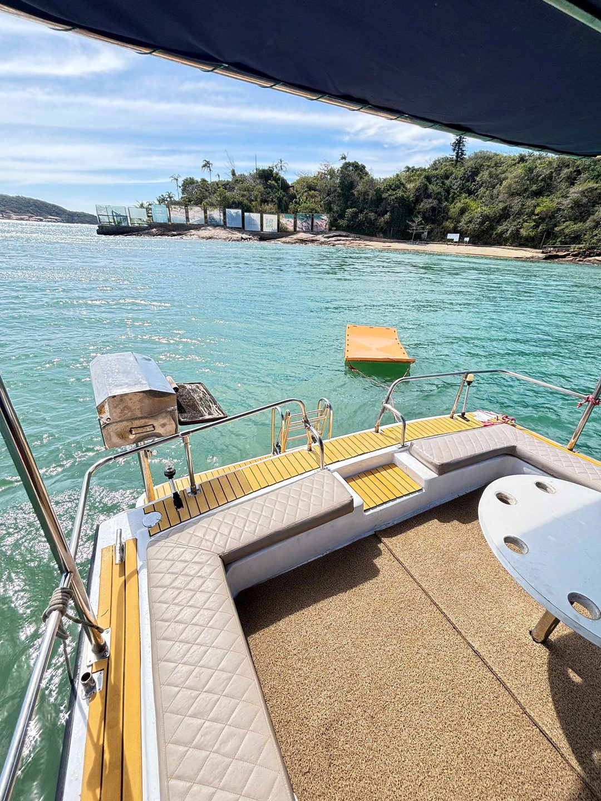
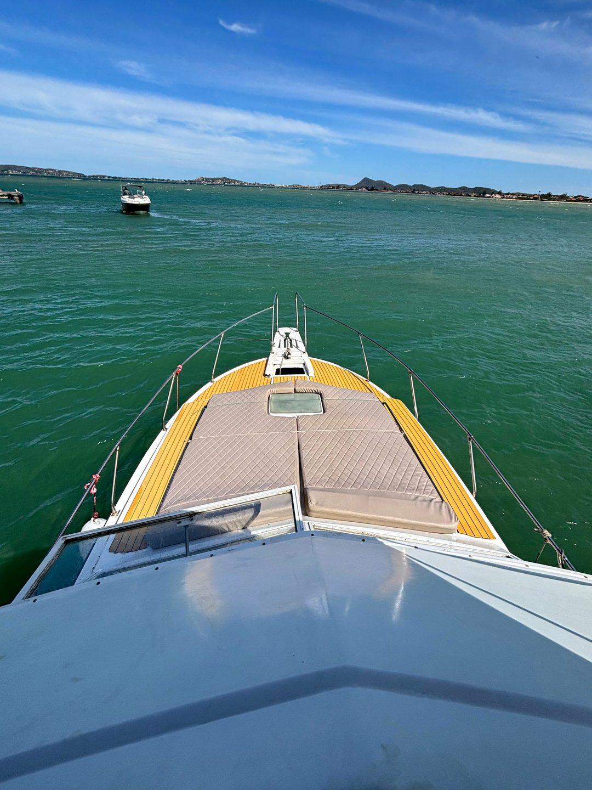
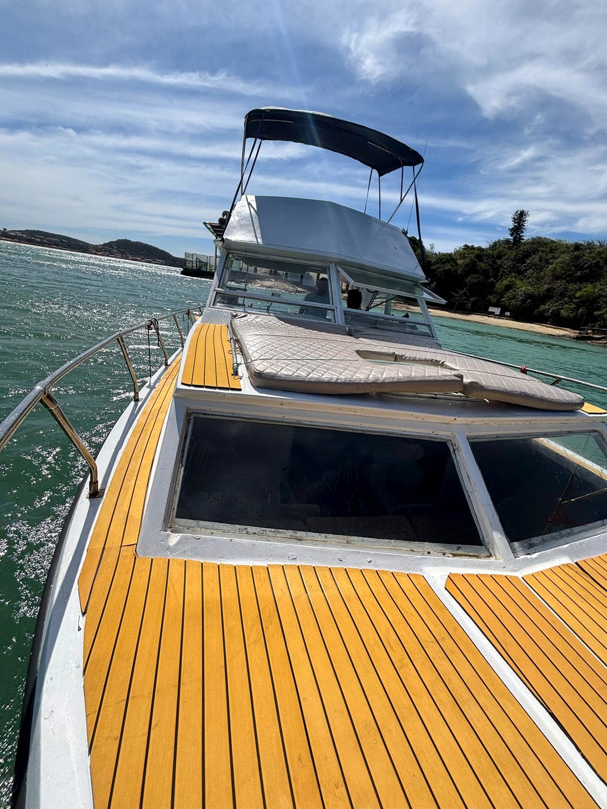
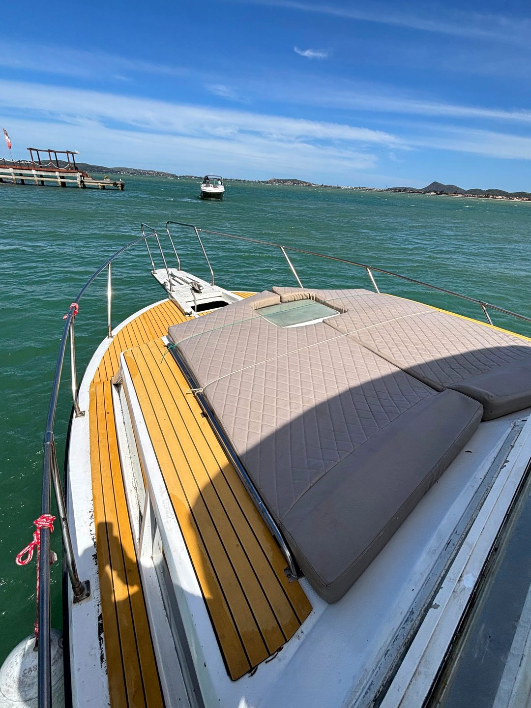
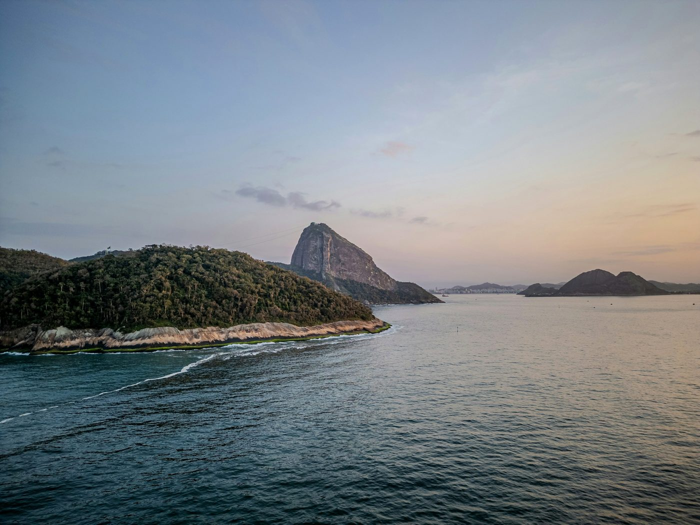
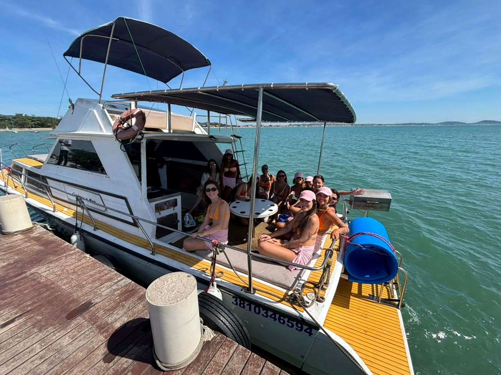
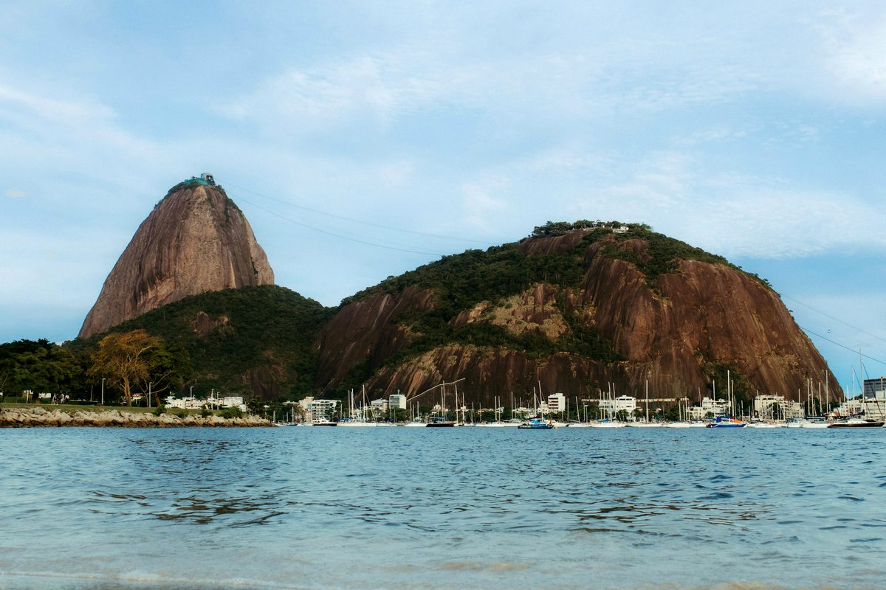

Marina da Glória · Rio de Janeiro
O Rio visto do mar.
Passeio de lancha para a sua turma, com saída da Marina da Glória.
A lancha
Espaço para a turma toda.



- Até 15 pessoas
- Churrasqueira a bordo
- Tapete flutuante
- Solário na proa
O passeio
Do cais para a baía.
Embarque
Marina da Glória
Você chega, sobe a bordo e a turma já sai.
Navegação
Baía de Guanabara
O cartão-postal do Rio passando ao lado.
Do seu jeito
Roteiro combinado
Paradas, horário e churrasco acertados com você.


Reserva direta
Monte seu passeio.
Escolha, confira a mensagem e envie no WhatsApp.
1. Formato
2. Roteiro preferido
3. Quantas pessoas
Até 15 pessoas por passeio.
Adultos
6
Crianças
0
4. A bordo
Sua mensagem
Enviar no WhatsApp
Embarque
Marina da Glória
- EndereçoMarina da Glória · Glória, Rio de Janeiro - RJ, 20021-140
- OrçamentoWhatsApp (21) 97446-9321 · Matheus
De onde sai o passeio?
Da Marina da Glória, no bairro da Glória, Rio de Janeiro.
Quantas pessoas cabem?
A lancha leva até 15 passageiros.
Tem churrasqueira?
Sim, na popa. E tem tapete flutuante para o banho de mar.
Quanto custa?
Depende da data, do horário e do grupo. O orçamento sai rápido pelo WhatsApp.
